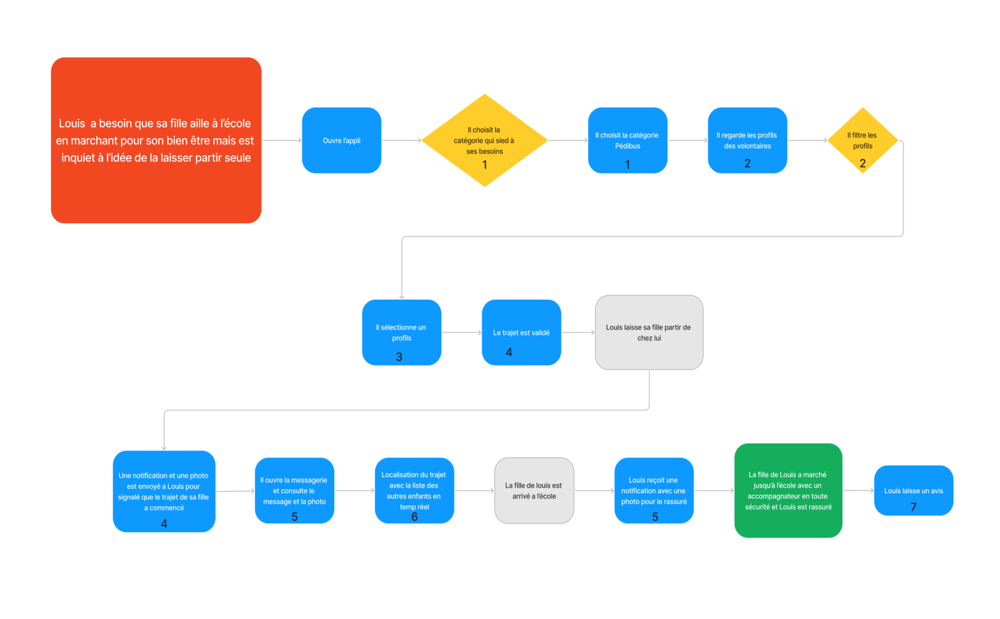
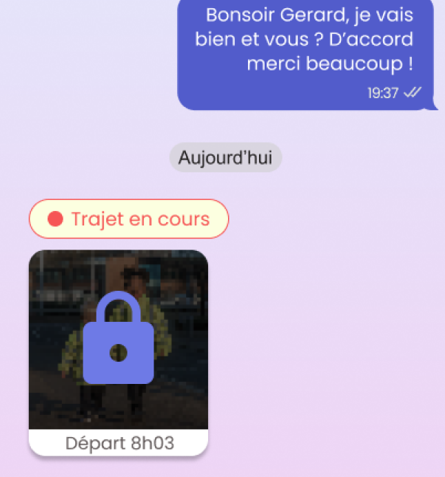
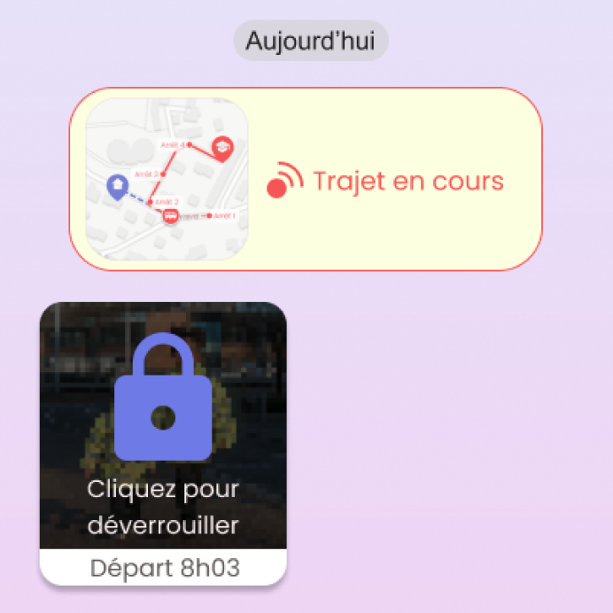
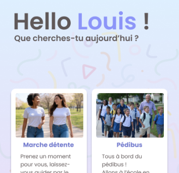
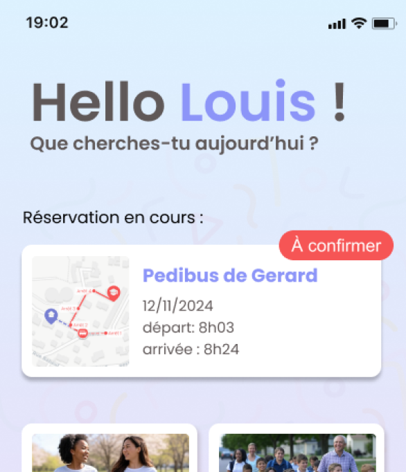

Pourquoi cette idée ?
La sédentarité touche de plus en plus d'adultes et d'enfants, les activités physiques diminuent, tandis que la pollution croissante de nos villes appelle à une transition vers des modes de transport plus doux et plus responsables.
Ces deux thématiques nous ont semblé constituer un bon point de départ pour développer une réflexion autour du développement de la mobilité douce dans le but de maintenir la santé de la population.
Nous avons décidé de nous concentrer sur les milieux urbains et plus particulièrement la ville de Saint-Etienne. Notre concept est principalement destiné aux enfants des parents pour le moment.
À qui est destiné notre application ?
Nos recherches ont mis en évidence une réelle tendance à la sédentarité chez les enfants et les adolescents :
37%
Des enfants de 6 à 10 ans n'atteignent pas les recommandations de 60 minutes d'activité physique par jour.
--sante.gouv.fr
39%
Des enfants ne pratiquent jamais de jeux en plein air les jours d'école.
--santepubliquefrance.fr
50%
Des enfants sont amenés à l’école en voiture
--santepubliquefrance.fr
Nous avons donc pour le moment décidé de nous concentrer sur les enfants des parents qui veulent que leurs enfants, seuls ou en groupe, se fassent accompagner par un adulte fiable et en toute sécurité.
Pour nous guider dans notre conception nous avons choisi d’imaginer le
persona suivant :
Autres persona imaginés mais écartés afin de se concentrer sur le public des parents et des enfants :
Notre problématique
Comment aider Louis à trouver un accompagnant lors des déplacements de mobilité douce de sa fille afin qu’il soit rassuré ?
Notre solution
Une application mobile aidant les parents à trouver un accompagnant lors des déplacements de mobilité douce de leurs enfants.
- Une liste d’accompagnants de confiance
- La possibilité de filtrer les trajets en fonction de nos exigences
- Un espace de messagerie pour échanger entre parents etaccompagnants
- Une suivi du trajet de l’enfant en temps réel
Userflow
Étapes de conception
Low Fi
Messagerie
Profil
Suivi du trajet
Réserver un trajet
Mid Fi
Messagerie
Profil
Suivi du trajet
Réserver un trajet
High Fi
Messagerie
Profil
Suivi du trajet
Réserver un trajet
Prototype
Retours de test utilisateurs
Tous les utilisateurs ont rapidement compris l'utilisation de l'application. Selon eux, l’application est intuitif et facile d’utilisation.
De plus, ils recommendent fortement l’application et ont attesté vouloir utiliser l’application lorsqu’ils seront ou étaient en mesure de pouvoir l’utiliser. Malgré la facilité de compréhension, il y a eu certaines modifications à apporter au niveau du visuel, notamment au niveau de l’accueil où il y a eu une certaine incompréhension des boutons sur lesquels appuyer, par exemple qui est due au fait que lire la description après le titre n’est pas intuitif pour un utilisateur. Il a donc été modifié de sorte que le bouton soit plus compréhensible sans avoir à lire la description.
-
Messagerie Durant la phase des messages, l’affichage des boutons avec lequel l'utilisateur peut intéragir n’était pas assez compréhensible car certains utilisateurs pensaient qu'il s'agissait uniquement d'un texte et non d'un bouton qui nous renvoie à la page suivante, nous avons décidé de l’agrandir, de centrer les boutons, de rajouter un aperçu du trajet sous forme d’une mini carte dans le bouton et d’y mettre une petite animation afin qu’elle soit plus facile de compréhension pour expliquer que le trajet est toujours en cours.
Avant
Après
-
Fonctionnalité de réservation Au niveau de l’écran d’accueil, nous n’avions pas rajouté la fonctionnalité de réservation temporaire, pour que ce soit plus facile de compréhension et d'accès, nous avons décidé de rajouter un bouton permettant directement d'avoir un aperçu et de confirmer la réservation directement depuis l’accueil.
Avant
Après
-
Notifications Lors de notre test utilisateur, une personne n’a pas réussi à bien comprendre ce qu’il fallait faire, on s’est rendu compte qu’il s’agit au moment de la notification de la réception du message de l’accompagnant qui était trop petite. Nous avons donc voulu faire une notification avec le même style que le modèle iPhone qui est plus visible et facilement compréhensible.
Avant

Après
Futures mises à jour
Afin de proposer un service toujours plus proche de nos utilisateurs, nous avons envisagé des futures fonctionnalités :
3 grandes nouvelles fonctionnalités seront ajoutées :
- La marche détente qui consistera à pouvoir se promener en binôme ou en groupe avec d’autres personnes grâce à notre application. Ils pourront être filtrés en fonction des exigences des différents utilisateurs (sous forme de tag)
- La balade à vélo qui suit le même principe que la marche détente mais avec une mobilité douce différente, ici le vélo
- Les courses qui consistent à accompagner une personne en incapacité de pouvoir faire ses courses seuls, cela peut cibler les personnes âgées comme il peut également cibler les personnes à mobilité réduite ou éventuellement les personnes possédant une maladie non visible
De nouvelles fonctionnalité secondaire seront ajoutées dans la catégorie pédibus :
- La fonctionnalité “Réserver un trajet” qui consiste à pouvoir effectuer des trajets extra-scolaires avec le même principe que les trajets scolaires en terme de cheminement.
- Suite à l’ajout de certaines fonctionnalités principales, certains documents supplémentaires pourront être demandés aux accompagnants tel que le bac pro ASSP ou d’autres certifications de service à la personnes afin de plus rassurer les utilisateurs lors de l’utilisation d’un ou plusieurs de nos services.
- Suite à l’ajout de certaines fonctionnalités principales et secondaires, il y aura la possibilité de mettre en favoris les accompagnateurs et ils seront visibles dans l’écran d’accueil des fonctionnalités pédibus (trajets scolaires et extrascolaires) et les courses pour qu’ils soient plus facile d’accès.